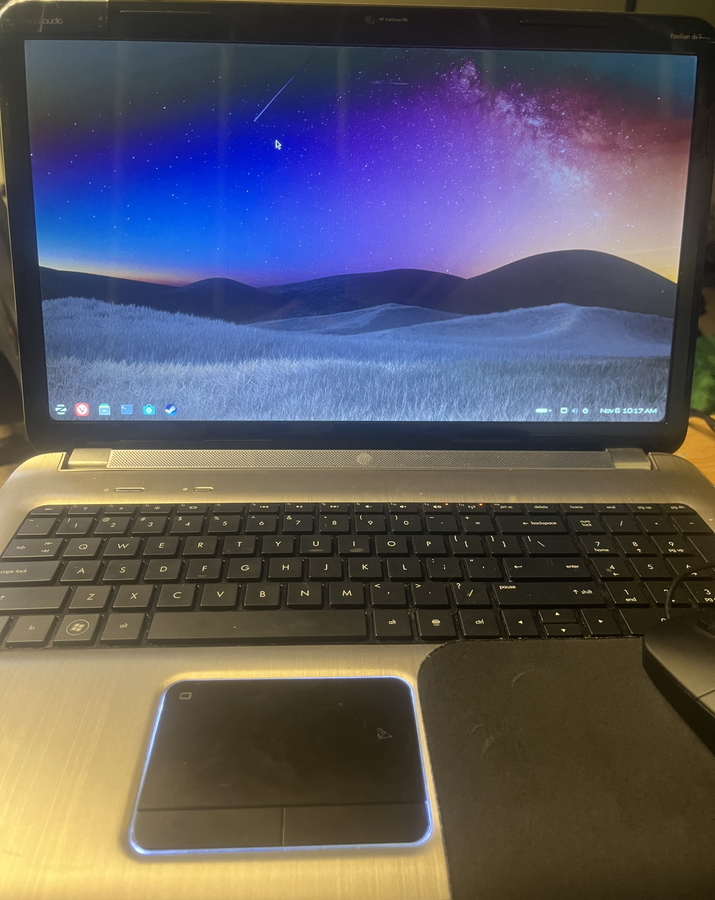
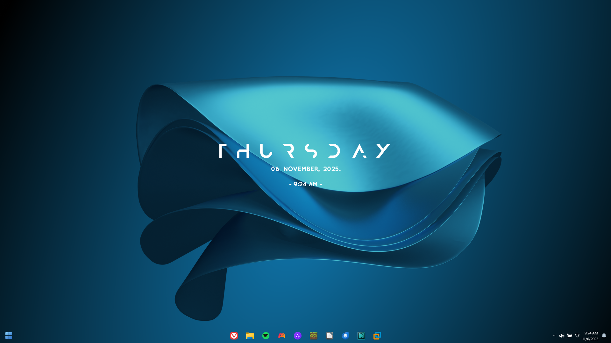

New Nintendo 3DS XL
My DSi broke, but this thing’s a beast. It's the portable i carry everywhere with me, and I’ve got it loaded with custom themes and homebrew apps.
Hey, I’m SuperYosh23. This is where I document all the random crap i'm working on. I mess with old consoles, fix up old laptops, and push random stuff to do things it definitely wasn't designed to do.
I’m just a random idiot who loves old and modern tech alike. This site is a collection of my current experiments.
My DSi broke, but this thing’s a beast. It's the portable i carry everywhere with me, and I’ve got it loaded with custom themes and homebrew apps.

One of my favorite consoles. Fully softmodded with a dark mode theme, stuffed with homebrew, and used daily.

Got this thing useable again after running Windows 7 for years. This old thing runs modern Minecraft at 60fps and serves as my primary testbench for random experiments.

The daily driver. I used to run Kubuntu, but compatibility headaches forced me to go back to Windows. Still heavily customized, though.
Tools, configs, and zip packs I use across my devices.